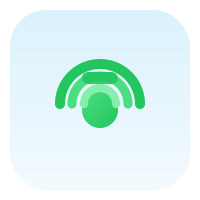

CallWave
Tezkor LAN/Internet audio qo'ng'iroqlar va chat
Holat: tayyor emas
Saqlanadi (localStorage), onlaynga chiqqanda serverga yuboriladi.
Boshlash
Avval onlayn bo'ling, keyin Qo'ng'iroq yoki Chat sahifasiga o'tib foydalanuvchini tanlang.
Onlayn foydalanuvchilar (Qo'ng'iroq)
Ulanish tugmasini bosing
Qo'ng'iroq uchun foydalanuvchini tanlang
Onlayn ro'yxatdan foydalanuvchini tanlab Qo'ng'iroq bosing
Chaqirilmoqda...
Javob kutilmoqda
Kirish qo'ng'irog'i
Vaqt: 00:00
Log
Call state: idle
PC: none
ICE: none
Signal: none
Onlayn foydalanuvchilar (Chat)
Ulanish tugmasini bosing
Chat
Foydalanuvchi tanlang